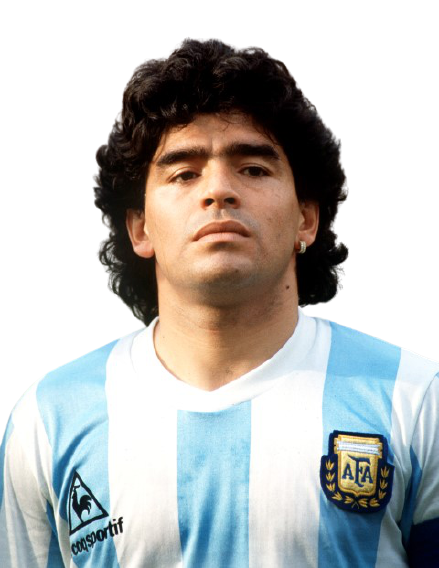
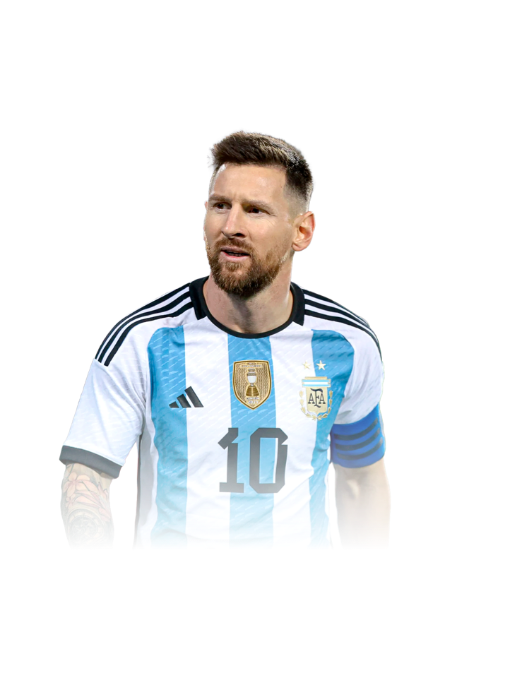
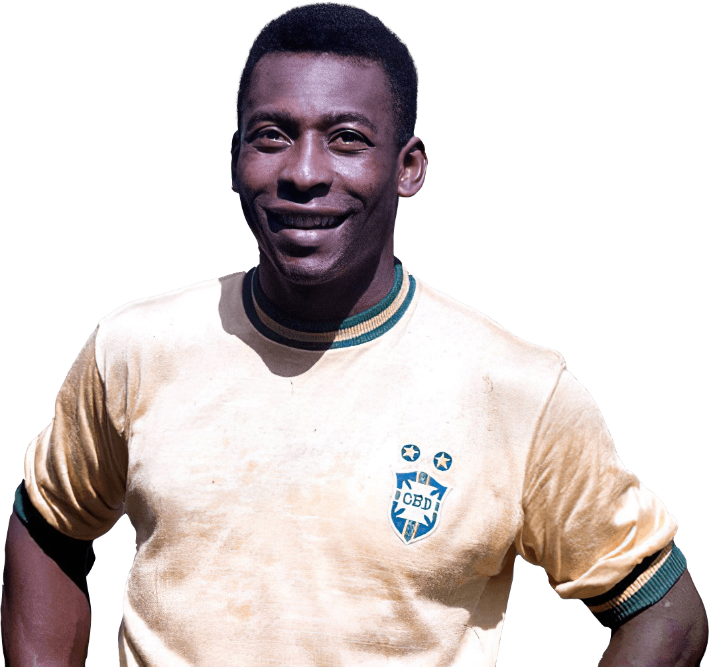
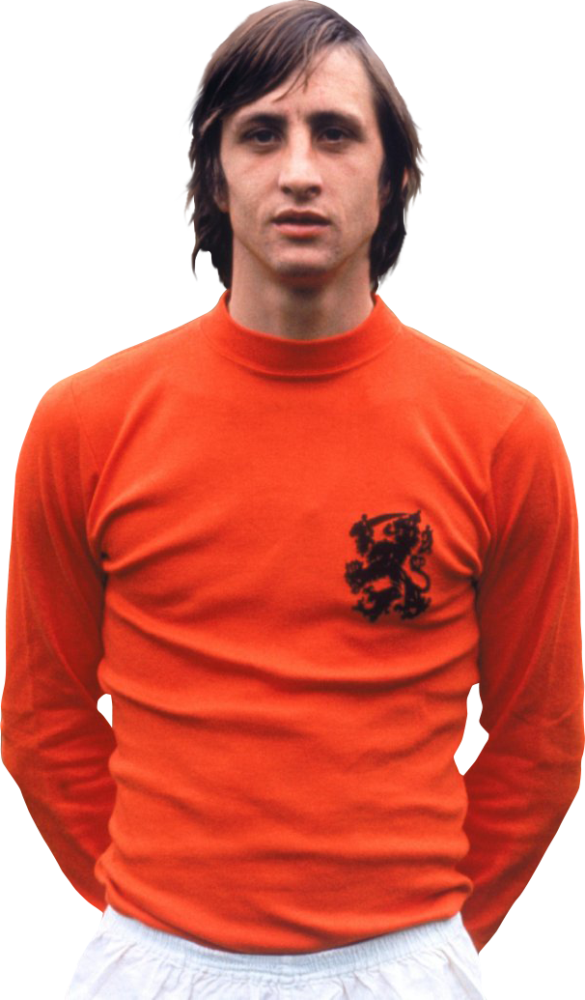
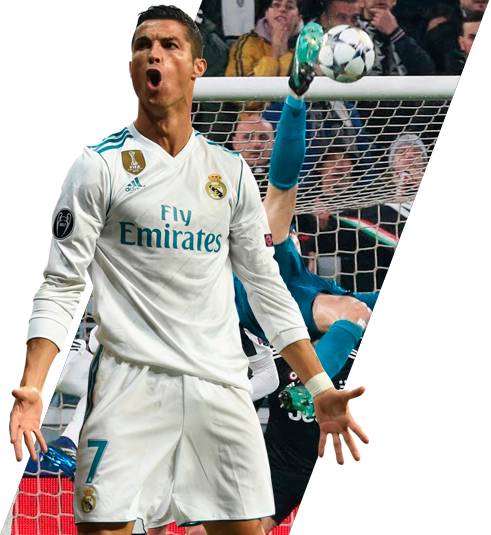

Futbol Campo
Historia del futbol
El futbol también llamdo balompié o soccer (en Estados Unidos), es un deporte de equipo jugado entre dos equipos de 11 jugadores cada uno y cuatro árbitros que se ocupan de que las normas se cumplan correctamente.
Es considerado el deporte más popular del mundo.
A finales de la Edad Media y siglos posteriores se desarrollaron en las Islas Britanicas y zonas aledañas distintos juegos juegos de equipo, a los cuales se los conocía como códigos de fútbol.
Estos códigos se fueron unificando con el paso del tiempo, pero fue en la segunda mitad del siglo XVII cuando se dieron las primeras grandes unificaciones del futbol, las cuales dieron origen al futbol de rugby, al futbol americano, al fútbol australiano, etc.
Los primeros códigos británicos se caracterizaban pocas reglas y por su extrema violencia.
Con estas unificaciones del futbol se lograron varios avances para la creación del futbol moderno, el 26 de octubre de 1963 es considerado como el día del nacimiento del futbol moderno. Creándose un nuevo código.
Junto a la creación del nuevo código se creo la Football Association, órgano que rige hasta la actualidad del futbol inteligente.
Terreno de juego
La medida del campo debe de tener de medida 90 x 45m o hasta 120 x 90m.
Las dos líneas ubicadas a lo largo del terreno se llaman líneas de banda, mientras que las otras se llaman líneas de fondo o líneas de meta.
Sobre el centro de cada línea de meta y adentrandose en el campo, se ubican las áreas penales. Las porterias tiene 3 palos, dos verticales de medida de 2,44 m de alto, y van unidas por otro palo horizontal, conocido como larguero, y su medida es de 7m. Y las áreas son rectangulares.
Pelota o balón
La pelota esta compuesta por 20 hexagonos y 12 pentagonos cosidos. Debe medir entre 68 y 78 cm. Tiene que pesar entre 410 y 450g.
Duración del partido
La duración de un partido, será de dos partes iguales de 45 minutos, con un tiempo de descanso que será de 15 minutos.
El objetivo de este deporte es marcar más goles que el equipo rival.
Se considera que un equipo ha marcado un gol cuando el balón pase por completo la línea de meta entre los palos verticales y por debajo del palo horizontal de la porteria rival.
5 mejores jugadores del mundo.
1- Diego Armando Maradona.
El futbolista argentino, uno de los grandes de todos los tiempos, es a menudo comparado con el legendario Pelé. Aunque está a la par del brasileño en cuanto a habilidad y destreza técnica, la carrera de Maradona ha sido más irregular: excentricidades, problemas de salud y drogadicción han afectado partes de su carrera, pero eso no ha impedido que su genio brille en innumerables ocasiones. Tras ganar el Mundial juvenil con su selección en 1979 y dos años más tarde con Boca Juniors, emprendió una gira europea que le llevó al F.C. Barcelona (1982-84), Napoli (1984-91) y Sevilla (1992-93). ). Luego de regresar a Argentina, jugó sucesivamente en Newell's Old Boys y Boca Juniors antes de retirarse en 1997. Fue a cuatro Copas del Mundo con Argentina y ganó el Campeonato del Mundo en México (1986), con actuaciones deslumbrantes y memorables.
2- Lionel Messi
(Lionel Andrés Messi; Rosario, Santa Fe, 1987) Futbolista argentino. Poseedor de una habilidad técnica excepcional, una endiablada velocidad y una inventiva inagotable, desde que llegó de la mano de sus padres al F.C. Barcelona, con 13 años de edad, realizó una carrera vertiginosa por las diferentes categorías hasta el primer equipo, en el que debutó con apenas 16 años en un partido amistoso ante el Oporto. En 2004, con 17 años, Leo Messi jugó su primer encuentro oficial de la Liga española. Con 18 años le llegó su consagración internacional: formó parte de la selección argentina, campeona en el Mundial Juvenil Sub-20 de Holanda, disputado en 2005.
3- Pelé
(Edson Arantes do Nascimento; Três Corações, Brasil, 1940) Futbolista brasileño. El mejor futbolista de todos los tiempos, en opinión de muchos, fue rechazado por los principales clubes de fútbol brasileños en los comienzos de su carrera deportiva, hasta que, tras jugar en varias formaciones secundarias, en 1956 fichó por el Santos de São Paulo. Su padre había sido un jugador de fútbol mediocre que se retiró tempranamente. Mientras aprendía el oficio de dominar el balón, Pelé se ganaba la vida como limpiabotas. Pero a los once años ya se habían fijado en él, y a los quince llegó al Santos, el equipo de su vida, después de la selección nacional de Brasil.
4- Johan Cruyff
(Amsterdam, 1947 - Barcelona, 2016) Jugador y entrenador de fútbol holandés. Hijo de una familia de modesta situación económica, a los diez años ingresó en el Ajax de Amsterdam, club en el cual permanecería hasta 1973 y con el que obtendría seis títulos de Liga y tres copas de Europa. Entre 1973 y 1978 jugó en el F. C. Barcelona, con el cual consiguió el Campeonato de Liga de 1974. Durante dichos años fue nombrado mejor futbolista europeo en tres ocasiones (1971, 1973 y 1974) y en 1974 fue designado mejor jugador del Mundial disputado aquel año. Tras su paso por el F. C. Barcelona recaló brevemente en la liga estadounidense y luego en el Levante español, para incorporarse de nuevo al Ajax como jugador, poco antes de retirarse de la práctica deportiva. Su posterior faceta de entrenador, que inició en el Ajax, estaría tan plagada de éxitos como la de jugador. Destacó sobre todo por su talante ofensivo y logró sus mayores victorias con el F. C. Barcelona, club al que entrenó entre 1988 y 1996. Durante dichos años logró cuatro ligas consecutivas (1991, 1992, 1993 y 1994) y una copa de Europa (1992). En 1998 creó la Universidad Johan Cruyff, que imparte estudios para la administración y gestión de entidades deportivas. En 1999 fue homenajeado en Barcelona y Amsterdam y fue nombrado asesor de la UEFA..
5- Cristiano Ronaldo
(Cristiano Ronaldo dos Santos Aveiro; Funchal, Madeira, 1985) Futbolista portugués considerado uno de los mejores delanteros del panorama actual. Además de los numerosos títulos y distinciones individuales obtenidos a lo largo de su trayectoria en el Manchester United (2003-2009) y en el Real Madrid (desde 2009), tuvo el honor de ser el futbolista por el que más dinero había pagado nunca un club: en junio de 2009, el traspaso al Real Madrid costó al club blanco 94 millones de euros, hasta ese momento la cifra más alta de la historia.
